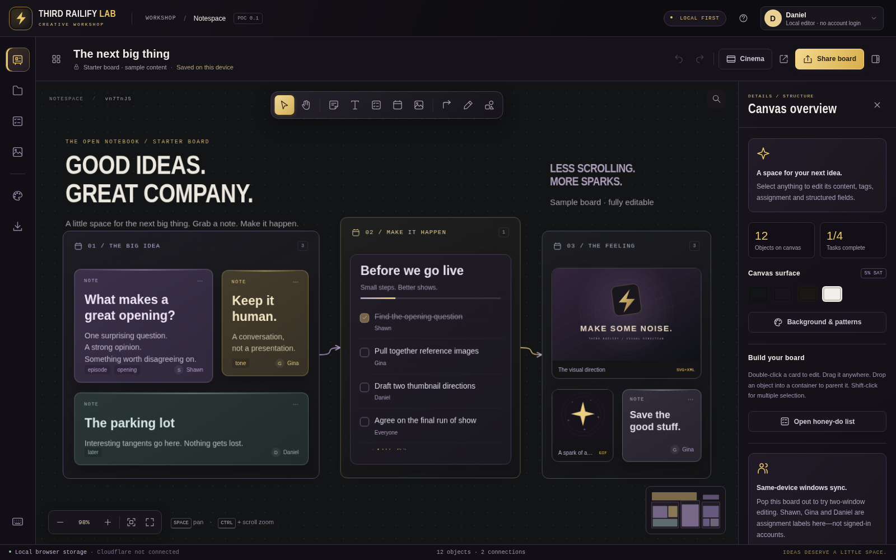
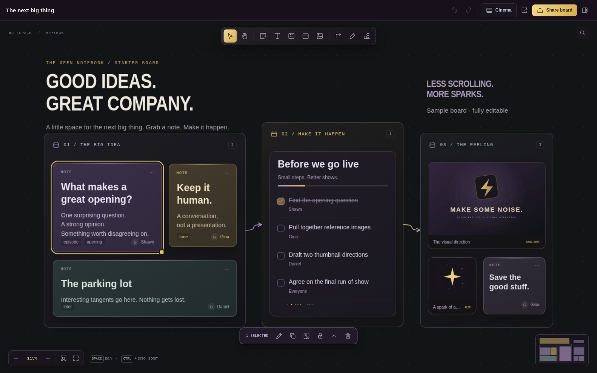
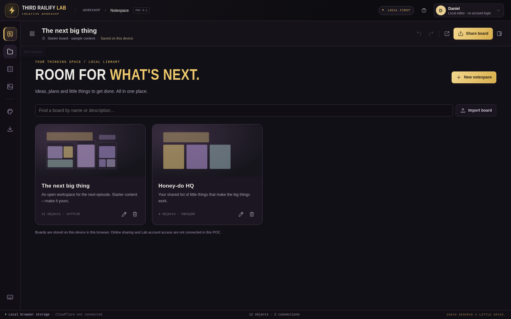
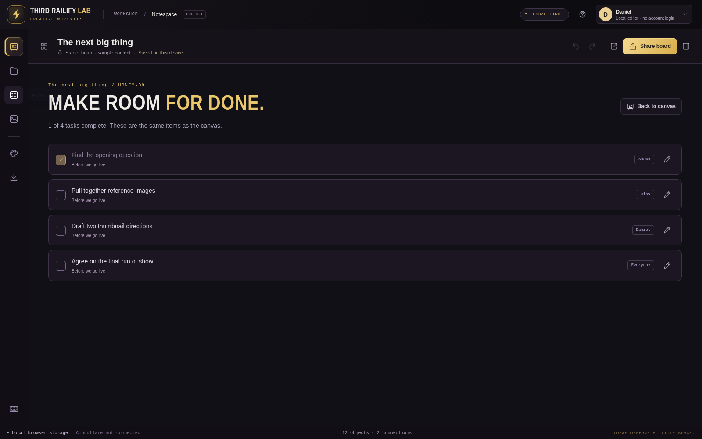
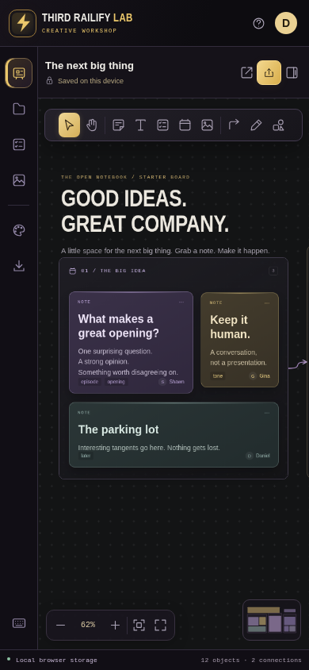
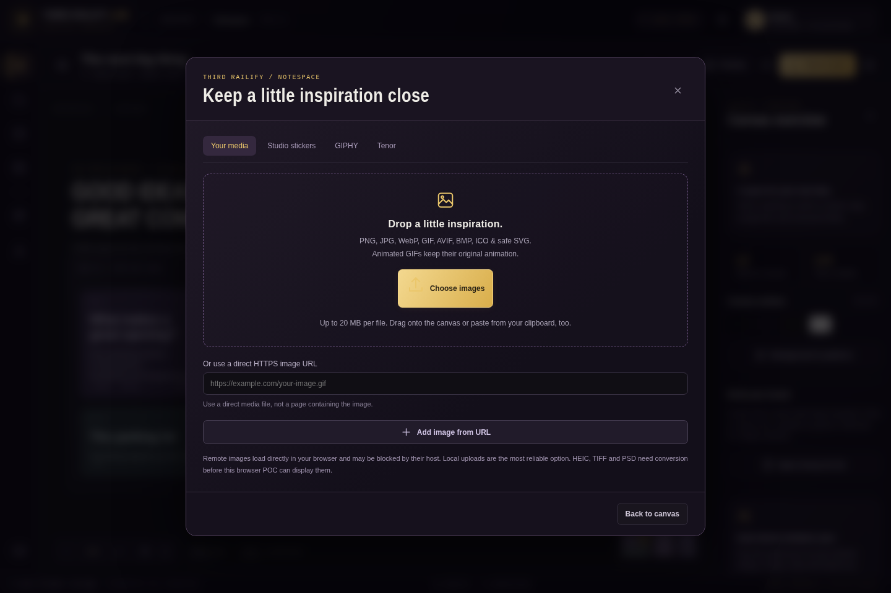
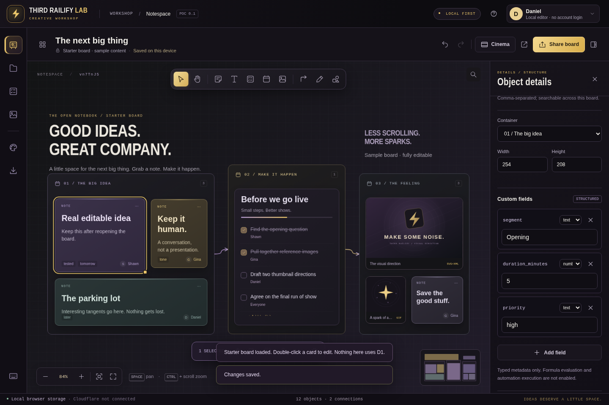

Notespace / visual evidence
Actual rendered application screenshots. System-font fallback shown. See docs/VALIDATION.md for fixture-backed browser coverage and untested native-storage / online-provider boundaries.
The editable Notespace
Cinema / compact editor
Board library
Honey-do task view
Mobile canvas
Media picker
Object inspector